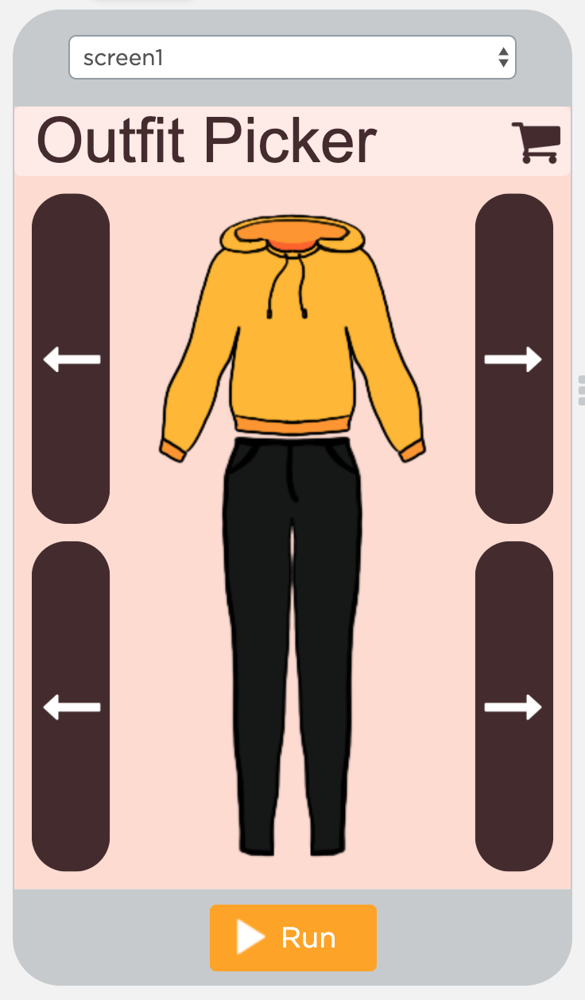
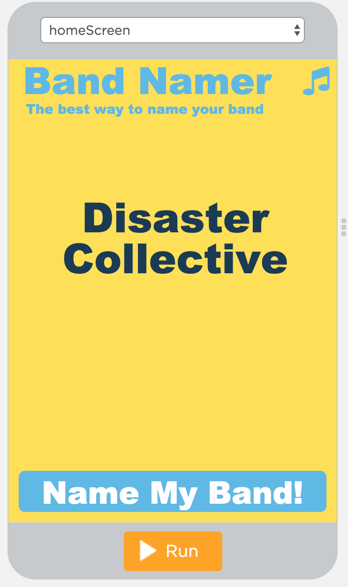
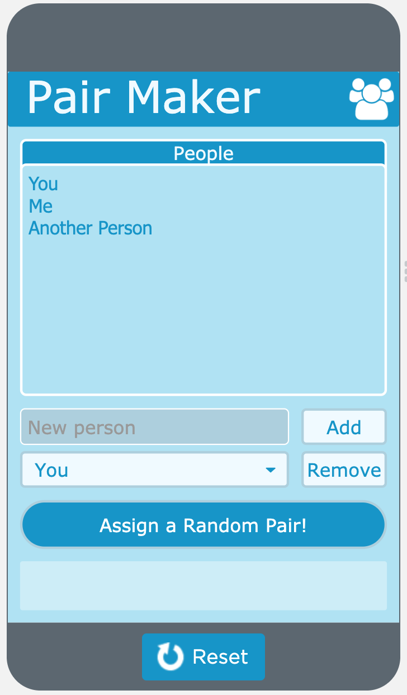
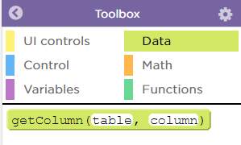

Today we will read real apps that use lists, and find the patterns they share.
What are some similarities and differences between lists and variables?
How does a list help manage complexity in a program?
A short Code.org video about finding the length of a list.
tops.length evaluates to the number of elements in tops.
A list has 5 elements. What is the index of its last element?
The list tops holds "hoodie", "tee", and "jacket". What does tops[tops.length] access?
Find a partner and choose one app: the Outfit Picker or the Band Namer. Read the program together, run it, and answer all the questions for your app.
Be ready to explain to another group how your app uses a list and what you learned from its code.


Find a group that read the other app. Spend 3 to 4 minutes explaining your app to them, then switch.
As you listen, look for what the two apps have in common. How does each one choose which element of a list to show?
To pick any element at random, choose a random index from 0 to length - 1.
These lines run each time the user clicks next. The if sends index back to 0 when it goes past the last index.
This time index starts at the last element. With your partner, predict which top the app shows after one click.
Let’s check. When does the condition become true?
A short Code.org video to watch before the Pair Maker.
Every group reads the Pair Maker app and answers its questions. Be ready to discuss your responses with another group.
This app changes its list while it runs. Look for where it adds and removes people, and how it picks a random pair.

With a partner, go to Level 4. Read through the code and run the app. What looks new? Then open the Data tab and investigate for about 5 minutes.
A Code.org video on importing and using datasets.
getColumn(table, column) returns a list that holds every value in one column of a dataset. You will find it in the Data drawer of the toolbox.
Because the result is an ordinary list, everything from 6.1 works on it: accesses, .length, and the random index pattern.
Choose a dataset and import it into your project. Then modify the code to print out one column from your dataset.

If nouns has 5 elements, which indexes can randomNumber(0, nouns.length - 1) produce?
What parts of using lists do you feel you already understand? What questions do you want to dig into more during tomorrow’s practice lesson?